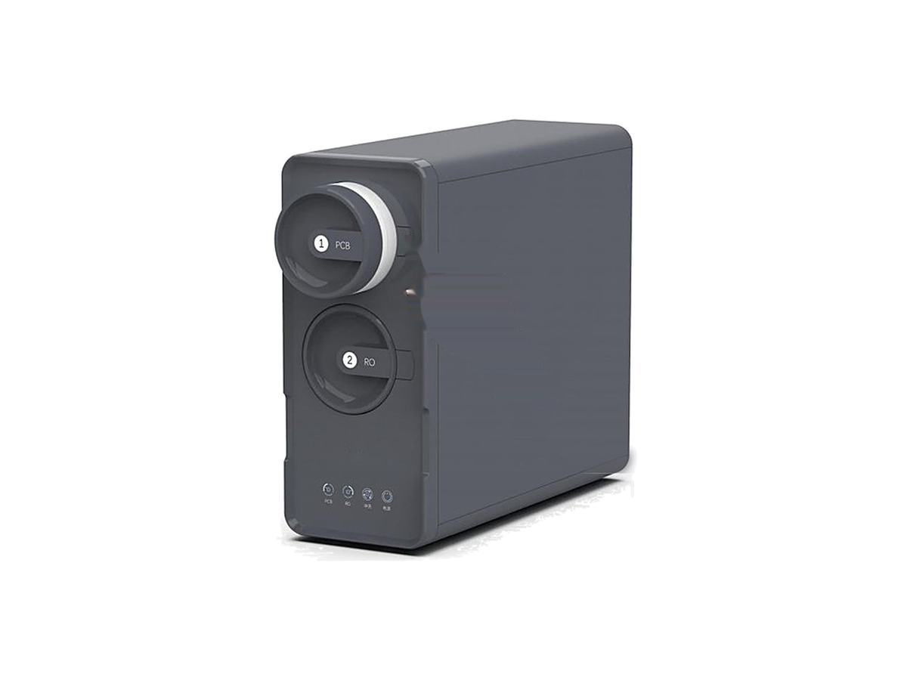

01 / Кухня
Кухня — под мойку
Скрыт под мойкой — мощный RO для семейной кухни.
Пример модели:RP-U09 — 800–1400 GPD · 4 варианта.
ROPureOEM / Студия продукции OEM
Начните с подтверждённой модели. Адаптируйте её под свой рынок. Утвердите образец.
Смотреть модели Обсудить ваш проект
Подбор продукции · Собственная торговая марка · Экспортное сопровождение

Подбор по сценарию использования
01 / Кухня
Скрыт под мойкой — мощный RO для семейной кухни.
Пример модели:RP-U09 — 800–1400 GPD · 4 варианта.

02 / Настольные
Свежемолотый кофе и очищенная RO вода из одного настольного устройства.
Пример модели:RP-C11 — из зёрен в чашку · очищенная RO вода.

03 / Коммерческие
Напольная горячая, холодная вода и лёд для офисов, школ и общественных помещений.
Пример модели:RP-C23 — RO 100G · 50–100 человек.

04 / Для всего дома
Центральное умягчение для всего дома.
Пример модели:Серия RP-W01 — 32,000–64,000 grain · 3 размера.
Подробнее
Подтверждённые модели каталога — сначала ознакомьтесь с характеристиками. MOQ 200 единиц на модель.
НастольныеЗерновая кофемашина 4-в-1 с очисткой воды RO
 Настольные
НастольныеГазированная, холодная и горячая вода — два варианта
 Под мойку
Под мойкуRO-очиститель водородной воды под мойку
 Для крана
Для кранаФильтр для крана с поворотом на 360°
 Для душа
Для душаПрямоугольный фильтр для душа

Под мойкуСистема RO с выдвижным картриджем без инструментов
 Настольные
НастольныеRO-очиститель с нагревательным кувшином
 Настольные
НастольныеRO-очиститель с льдом, горячей и холодной водой

OEM vs ODM
Выберите подтверждённую модель и сделайте её своей: логотип, цвет, фильтры, кран, упаковка.
Адаптируйте конструкцию, функции и пресс-форму под ваш бриф. Каждый бриф сначала проходит инженерную оценку.
От модели к вашему бренду
Завод и контроль качества


Фото завода и контроля качества: производство, тестирование и отгрузка.
Сертификация
Сообщите нам вашу модель и целевой рынок — мы подтверждаем точный список до заказа.
Типичные рынки:ЕС · Великобритания · США · Ближний Восток · Юго-Восточная Азия · Австралия
Другие рынки, включая CB, где применимо, подтверждаются для каждой модели по запросу.

Вопросы и ответы на главной
200 единиц на модель.
Да — образцы платные, и их стоимость возвращается при первом оптовом заказе. Утвердите образец, включая брендинг и упаковку, до оптового производства.
Срок поставки подтверждается в каждом предложении — он зависит от модели, количества и сертификации.
Оплата производится до отгрузки. Мы не предлагаем кредитные условия.
Подтверждается для каждого рынка, модели и заказа. Сообщите нам вашу модель и целевой рынок, и мы подтвердим точный список до заказа.
Статьи

Руководство по покупке
MOQ — 200 единиц на модель для очистителей воды собственной торговой марки. Сначала образцы, стоимость возвращается при первом оптовом заказе, отгрузка через 40 дней после утверждения образца.

Руководство по покупке
Подберите производительность RO под вашу исходную воду, прежде чем выбирать модель, — сравнение производительности настольных моделей, моделей под мойку и диспенсеров.

Руководство по покупке
Напряжение и частота настраиваются под целевую страну — подтверждайте их для каждой модели и заказа.
Расскажите о вашем рынке, типе продукции и количестве.